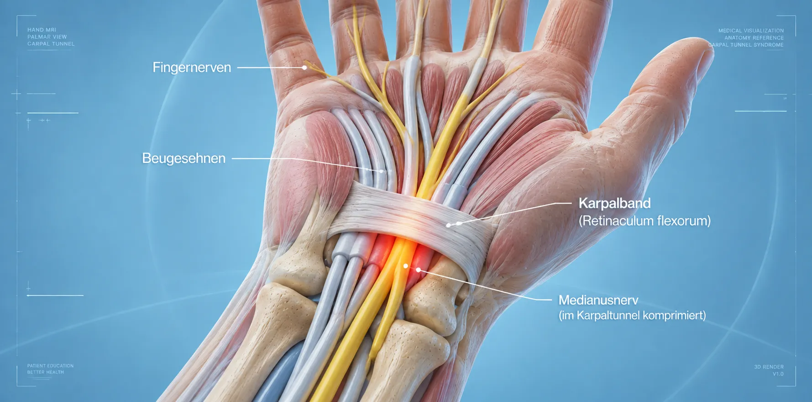

Unsere Behandlungen
Spezialisierte operative und konservative Verfahren – individuell auf Ihre medizinische Indikation abgestimmt.
Wichtiger medizinischer Hinweis
Die genaue Indikationsstellung und die Auswahl des geeigneten Verfahrens erfolgen stets individuell durch den Arzt nach eingehender Untersuchung und Bildgebung. Wir können keinen konkreten Behandlungserfolg versprechen.
Operative Eingriffe
Mikrochirurgische, endoskopische und minimalinvasive Operationen
Unser Leistungsspektrum umfasst spezialisierte operative Verfahren an der Wirbelsäule und den peripheren Nerven. Jede Operation wird nach ausführlicher Diagnostik individuell auf Ihre medizinische Indikation abgestimmt.
Wir setzen auf minimalinvasive Techniken, die die umliegenden Strukturen schonen und eine schnelle Erholung ermöglichen.
Bandscheibenoperation (Mikro- & Endoskopisch)
Mikrochirurgische oder endoskopische Entfernung von vorgefallenem Bandscheibenmaterial zur Entlastung komprimierter Nervenwurzeln – schonend und präzise.

Mikrochirurgische Dekompression & Stabilisierung
Operative Entlastung eingeengter Nervenstrukturen bei Spinalkanalstenose. Bei Bedarf ergänzt durch minimalinvasive Stabilisierung der Wirbelsäule.

Kyphoplastie & Wirbelkörperstabilisierung
Perkutane minimalinvasive Stabilisierung von Wirbelkörperbrüchen bei Osteoporose oder Tumorbefall. Zementaugmentation zur Schmerzreduktion und Stabilisierung.

Operative Versorgung peripherer Nerven (KTS, Sulcus)
Ambulante mikrochirurgische Dekompression bei Karpaltunnelsyndrom, Sulcus-ulnaris-Syndrom und weiteren Engpasssyndromen der peripheren Nerven.

Neuromodulation & Spinal Cord Stimulation
Innovative elektrische Stimulation von Nervenbahnen bei chronischen Schmerzsyndromen. Rückenmarkstimulation (SCS) nach sorgfältiger Indikationsprüfung.

HWS-Operation & Bandscheibenprothetik
Operative Eingriffe an der Halswirbelsäule: Dekompression, Fusion oder bewegungserhaltender Bandscheibenersatz (Arthroplastie) je nach individuellem Befund.

Perkutane Tumor-Radiofrequenz-Thermoablation
Minimalinvasive Ablation bei Knochentumormetastasen durch gezielte Wärmeenergie. In Abstimmung mit dem betreuenden Onkologen und der interdisziplinären Behandlungsplanung.
Wirbelgelenksblockaden & Denervation
Gezielte Infiltration oder Radiofrequenzdenervation der Facettengelenke zur Schmerztherapie bei Facettengelenkarthrose und chronischen Rückenschmerzen.
Entfernung intraspinaler Tumoren
Mikrochirurgische Resektion von Tumoren, Metastasen und Gefäßanomalien im Bereich der Wirbelsäule und des Rückenmarks, inklusive Tethered-Cord-Symptomatik.
Arthroplastie & Arthrodese (ISG)
Operative Versorgung des Iliosakralgelenks: Gelenkerhalt oder Versteifung (Arthrodese) bei chronischem ISG-Syndrom, nach individueller Indikationsprüfung.
Muskelbiopsie
Diagnostische Entnahme von Muskelgewebe zur Abklärung unklarer Nerven- und Muskelerkrankungen (Myopathien, Neuropathien). Ambulant oder stationär möglich.
Neurochirurgische Begutachtung
Professionelle medizinische Gutachten und Zweitmeinungen bei neurochirurgischen Fragestellungen – für Patienten, Versicherungen und Gerichte.